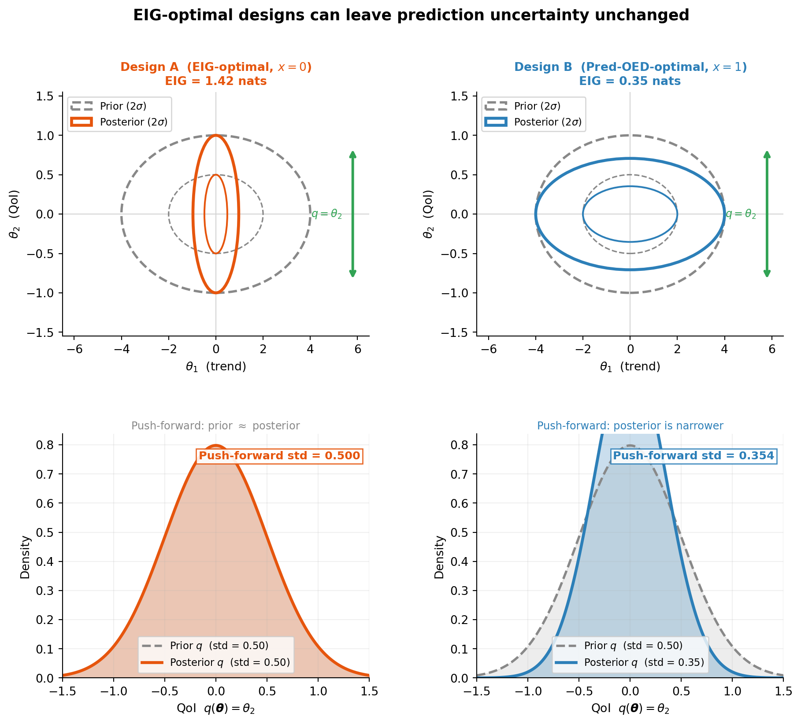
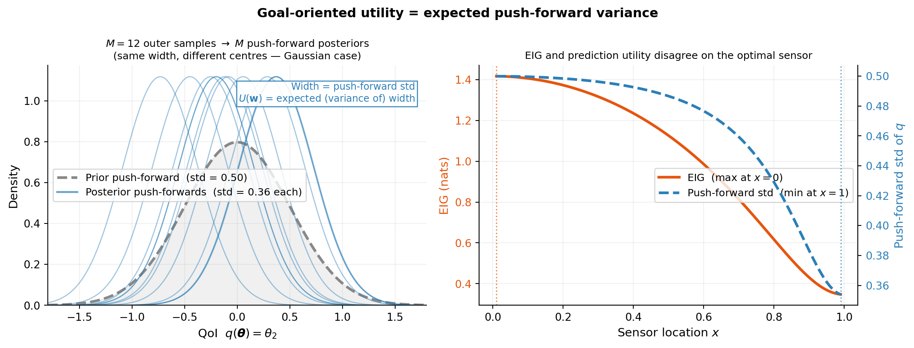
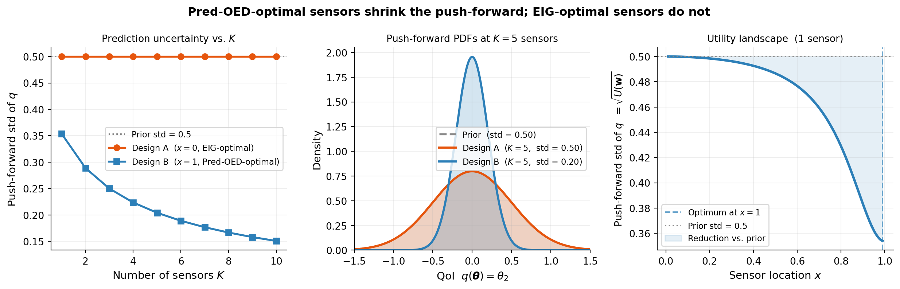

Goal-Oriented Bayesian OED: Designing for Prediction
PyApprox Tutorial Library
Why targeting prediction uncertainty rather than parameter uncertainty changes which experiments are optimal.
TipDownload Notebook
Learning Objectives
After completing this tutorial, you will be able to:
- Explain why EIG-based OED can be suboptimal when the goal is prediction
- Use a 2D parameter ellipse to visualize why EIG-optimal sensors can leave push-forward uncertainty completely unchanged
- Define the goal-oriented utility in terms of posterior push-forward variance
- Describe how a risk measure replaces simple variance for vector-valued QoIs
- Identify the role of the double-loop estimator for goal-oriented utility
Prerequisites
Complete Learning from Experiments before this tutorial.
Why EIG Can Be the Wrong Objective
Consider a model with two parameters \(\boldsymbol{\theta} = (\theta_1, \theta_2)\): \(\theta_1\) controls a large-scale trend (high prior variance, easy to identify) and \(\theta_2\) controls a local feature (lower prior variance, harder to identify). Maximizing EIG preferentially places sensors to identify \(\theta_1\) because it drives most of the KL divergence. But if the downstream quantity of interest (QoI) depends almost entirely on \(\theta_2\), those sensors are wasted.
The figure below makes this concrete. The model is:
\[ f(\boldsymbol{\theta}, x) = \theta_1 \cos\!\left(\tfrac{\pi x}{2}\right) + \theta_2 \sin\!\left(\tfrac{\pi x}{2}\right), \quad x \in [0, 1], \]
with prior \(\theta_1 \sim \mathcal{N}(0, 4)\), \(\theta_2 \sim \mathcal{N}(0, 0.25)\), noise \(\sigma_n = 0.5\), and QoI \(q(\boldsymbol{\theta}) = \theta_2\). A sensor at \(x=0\) measures only \(\theta_1\) (since \(\cos 0 = 1\), \(\sin 0 = 0\)). A sensor at \(x=1\) measures only \(\theta_2\) (since \(\cos\tfrac{\pi}{2} = 0\), \(\sin\tfrac{\pi}{2} = 1\)). Both sensors generate identical EIG up to a scalar — yet only one reduces prediction uncertainty.
The key insight: Design A has 4× higher EIG because it reduces uncertainty about the high-variance parameter \(\theta_1\) — but \(\theta_1\) is irrelevant to the QoI. Its posterior ellipse shrinks in the \(\theta_1\) direction (horizontal), leaving the \(\theta_2\) direction (vertical, green arrow) unchanged. The push-forward is identical to the prior. Design B has lower EIG but directly constrains \(\theta_2\), giving a 30% narrower push-forward.
Goal-oriented OED replaces the EIG criterion with a utility that directly measures prediction uncertainty after the experiment.
The Goal-Oriented Utility
Let \(q: \mathbb{R}^D \to \mathbb{R}^Q\) be a QoI map. For a design \(\mathbf{w}\) and observations \(\mathbf{y}\), the posterior push-forward \(p(q(\boldsymbol{\theta}) \mid \mathbf{y}, \mathbf{w})\) captures residual prediction uncertainty. The goal-oriented utility is:
\[ U(\mathbf{w}) = \mathbb{E}_{p(\mathbf{y} \mid \mathbf{w})} \!\left\{ \mathcal{R}_{p(q)}\!\left[ \mathbb{V}_{p(\boldsymbol{\theta} \mid \mathbf{y}, \mathbf{w})}[q(\boldsymbol{\theta})] \right] \right\}, \]
where:
- \(\mathbb{V}_{p(\boldsymbol{\theta} \mid \mathbf{y}, \mathbf{w})}[q(\boldsymbol{\theta})]\) is the posterior variance of \(q\) (a \(Q\)-vector for vector-valued QoIs),
- \(\mathcal{R}_{p(q)}\) is a risk measure that aggregates the \(Q\) variance values into a single scalar.
For scalar QoIs (\(Q = 1\)), \(\mathcal{R}\) is redundant. For \(Q > 1\), a natural choice is the expected value under a discrete uniform measure:
\[ \mathcal{R}[v] = \frac{1}{Q}\sum_{i=1}^Q v_i. \]
Risk-averse choices — such as Average Value at Risk (AVaR) — can also be used when the worst-case QoI deviation matters more than the average.
The Push-Forward as an Average
Like EIG, the goal-oriented utility \(U(\mathbf{w})\) is an expectation over observations. For each outer sample \(\mathbf{y}^{(m)}\) you obtain a different posterior push-forward, and \(U(\mathbf{w})\) averages their variance.

The right panel crystallises the key tension: EIG peaks at \(x=0\) because a sensor there explains most of the prior variance (all from \(\theta_1\)). The push-forward std is minimised at the opposite end, \(x=1\), because only there does a sensor directly constrain \(\theta_2\). Every intermediate location involves a tradeoff, and the two criteria rank them in reverse order.
NoteWhy variance does not depend on \(\mathbf{y}\) here
For a linear Gaussian model, the posterior covariance \(\boldsymbol{\Sigma}_\text{post}\) is independent of the observed values \(\mathbf{y}\) — it depends only on the design matrix. So the push-forward variance \(\mathbf{c}^\top\boldsymbol{\Sigma}_\text{post}\mathbf{c}\) is the same for every outer sample, and \(U(\mathbf{w})\) equals that constant variance. For nonlinear models this no longer holds: the outer expectation genuinely matters and requires Monte Carlo estimation.
From Variance to Deviation Measure
In practice, the utility is often expressed in terms of a deviation measure:
\[ U(\mathbf{w}) = \mathbb{E}_{p(\mathbf{y} \mid \mathbf{w})} \!\left\{\mathcal{D}\!\left[q(\boldsymbol{\theta}) \mid \mathbf{y}, \mathbf{w}\right]\right\}, \]
where \(\mathcal{D}[X] = \mathcal{R}[X] - \mathbb{E}[X]\) is the deviation associated with risk measure \(\mathcal{R}\). Choosing \(\mathcal{D}\) to be the standard deviation yields a natural, interpretable criterion: minimize the expected posterior standard deviation of the QoI. Choosing AVaR deviation gives a risk-averse variant that prioritizes reducing tail prediction uncertainty.
Double-Loop Estimator for Goal-Oriented Utility
The goal-oriented utility requires the same outer-inner loop structure as EIG:
- Outer loop (\(M\) samples): draw \((\boldsymbol{\theta}^{(m)}, \mathbf{y}^{(m)})\) pairs and evaluate the QoI \(q^{(m)} = q(\boldsymbol{\theta}^{(m)})\).
- Inner loop (\(N_\text{in}\) samples): approximate the posterior variance by importance-weighted averaging over fresh prior samples.
A key difference from the EIG estimator: for goal-oriented OED, the inner loop dominates convergence because the posterior variance involves a quadratic combination of QoI values and likelihoods. This is the opposite of EIG, where the outer loop dominates. The usage tutorial demonstrates this numerically.
The figure below shows how the push-forward shrinks as sensors accumulate under each design, and the utility landscape for a single-sensor sweep — the direct parallel to the posterior-shrinkage figure in the KL-OED tutorial.

Design A sensors at \(x=0\) measure only \(\theta_1\). Adding arbitrarily many of them never reduces \(\theta_2\) uncertainty — the left panel’s orange line is perfectly flat at the prior std for every \(K\). Design B at \(x=1\) monotonically tightens the push-forward, reaching std = 0.20 at \(K=5\) versus 0.50 for Design A. The right panel confirms the utility landscape is monotone in \(x\): every step toward \(x=1\) improves prediction.
Key Takeaways
- EIG maximizes information about all parameters equally; it is suboptimal when only a specific QoI matters. A sensor can have high EIG while reducing QoI uncertainty by exactly zero.
- The posterior push-forward \(p(q(\boldsymbol{\theta})\mid\mathbf{y},\mathbf{w})\) captures what actually matters: residual prediction uncertainty after the experiment.
- For vector-valued QoIs, a risk measure \(\mathcal{R}\) aggregates componentwise deviations into a scalar utility.
- For the linear Gaussian case, push-forward variance is independent of the observed \(\mathbf{y}\) and equals the analytic posterior variance. For nonlinear models the outer expectation genuinely varies across observations and requires Monte Carlo.
- The inner loop dominates convergence for the goal-oriented estimator, unlike EIG where the outer loop dominates.
Exercises
In the example above, Design A gives zero benefit for any \(K\). Is this specific to the QoI \(q(\boldsymbol{\theta}) = \theta_2\), or would it also hold for \(q(\boldsymbol{\theta}) = \theta_1 + \theta_2\)? Compute the push-forward std for both QoIs under each design.
Suppose \(q(\boldsymbol{\theta}) = \theta_1 + \theta_2\) and the prior is isotropic. Would EIG and goal-oriented OED agree on the optimal design? What if \(q(\boldsymbol{\theta}) = \theta_2\) only?
Give an example QoI where AVaR deviation is a better objective than standard deviation. Why?
Explain qualitatively why the inner loop dominates convergence for the goal-oriented estimator but not for EIG.
Next Steps
- Gaussian Posterior Expressions for OED — closed-form expressions for risk measures under Gaussian posteriors
- Goal-Oriented OED: Convergence Verification — API usage and convergence analysis with
PredOEDDiagnostics